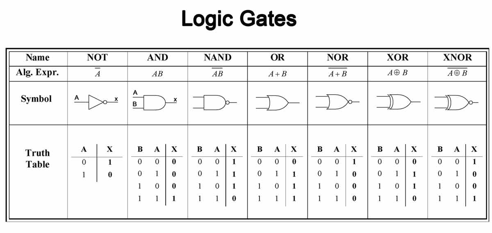

Logic gates are used in microcontrollers, microprocessors, and electronic and electrical projects
circuits, and embedded system applications.
The basic logic gates are categorized into seven types as
AND,
OR,
XOR,
NAND,
NOR,
XNOR,
NOT.
These are the important digital logic switch, mainly based on the Boolean function.
Logic gates can be built using a relay "mechanical switch" or transistors. Since relays are very slow I decided to use transistors instead of relays.

Logic gates symbols with truth tables for web
Explanation-
You must have used calculators, computers, or some other electronic devices
and you must have thought that how they store information so well
e.g- like calculator latching "mathematical" values in its display, The storing component here
is a transistor. A transistor used in a computer chip is a very tiny small transistor
"7-10 nanometers in size" The transistor can be either ON or OFF, it can't be
in the middle stage which is called the "linear region of a transistor". So to represent
the transistor is ON or OFF we use "ones (1's) and zeros (0's)", and the binary systems are
filled with such "ones (1) and zeros (0)" which represent the state of the transistor. Binary
systems are used to process certain tasks like storing some information, or for data transmission.
Now, more about logic gates working
Suppose there is a battery, and two switches in series that connects to a bulb (figure4.1)
And let's name them A and B (figure4.2) if switch A is "closed" (turning on a switch)
And if B is open (fig4.3) then the output bulb will be off since no current flows through
the bulb now, if I close switch B (fig4.4) the bulb will turn ON because the current flows
through it. And that's how an AND gate works,